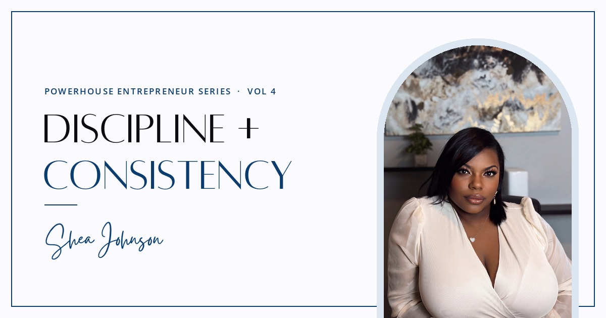
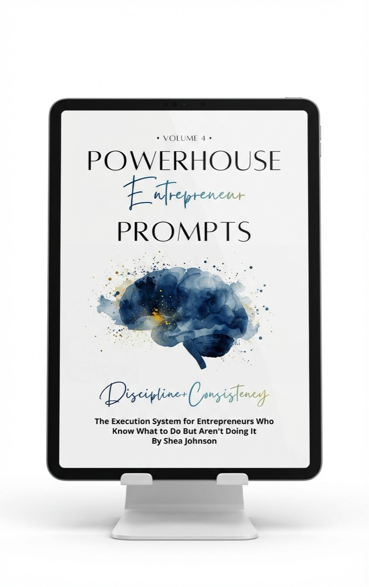

For almost a year now, I’ve been planning my life month by month.
Setting monthly themes.
Picking one project to focus on each week.
I gamified the whole thing.
Bought a calendar, hung it on my wall…
and had so much fun filling it in and checking things off.
And it worked.
I was finally, finally crushing my goals.
Doing the things I said I was going to do.
For myself.
But something was still missing.
I noticed my streaks getting shorter and shorter.
The momentum I’d built would slip away.
I didn’t understand what was happening.
So I went on a journey to figure it out.
What I discovered was the missing link…
discipline and consistency.
Not motivation.
Not more strategies.
Not a better planner.
Just the ability to keep going when I didn’t feel like it…
and to come back when I fell off.
What happens inside…
You upload one file to Claude or ChatGPT.
You say hello.
And an AI coach walks you through five phases, building real tools with you as you go.
The real reason you haven’t been following through (hint: it’s not laziness).
Promises small enough to actually keep.
A way back from the shame spiral.
A morning win stack that takes less than fifteen minutes.
And a plan for the exact moment you want to quit.
Then it stays with you as an accountability partner, for as long as you want one.
Because the discipline isn’t in the streak. It’s in the return.
How to begin…
It’s a guided PDF. No setup needed.

Want the science behind it?
I went deep on the research, too.
Willpower, dopamine, habits, and why the return matters more than the streak.
Read The Science of Discipline, free
If it’s the missing link for you too, this one is for you.
We’re in this together.
— Shea
AI Business Coach | mssheajohnson.com